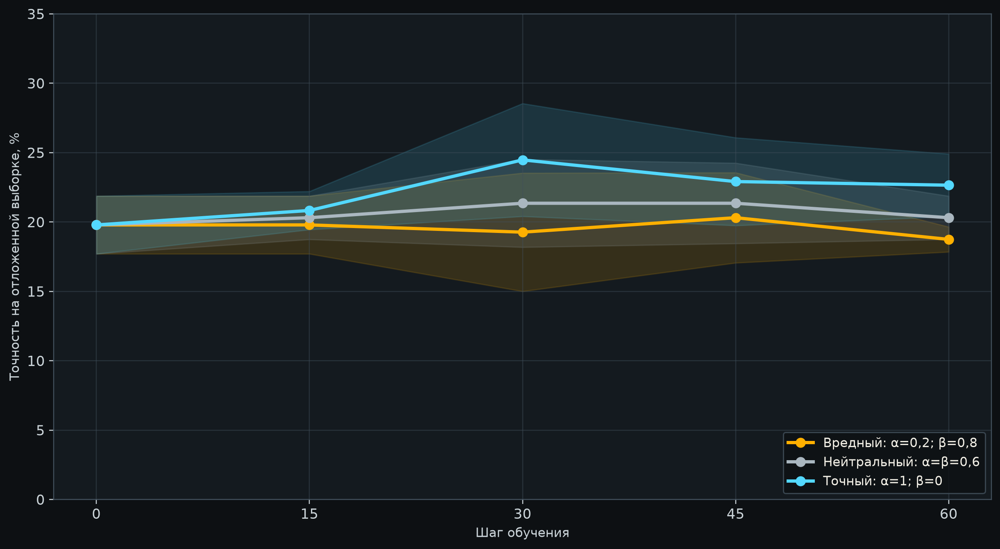
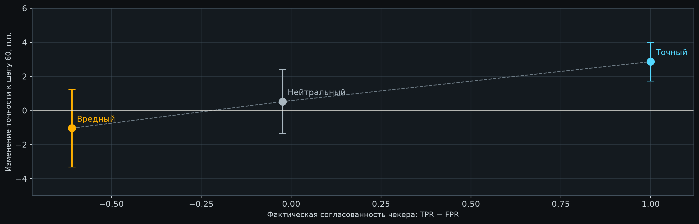
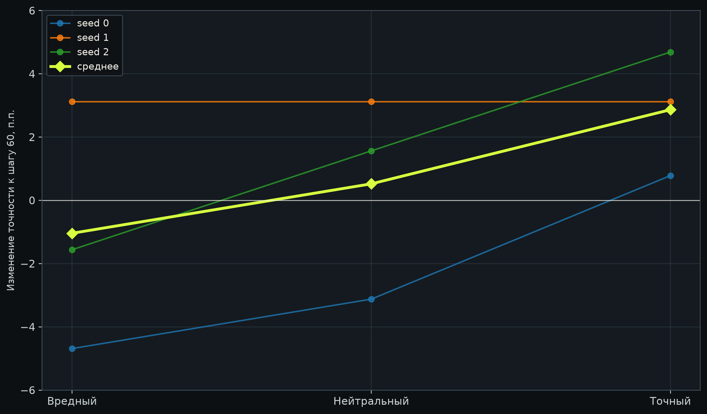

Что видно
Средний результат растёт вместе с качеством чекера.
Точный и вредный режимы разделяет 3,9 п.п. на финальном шаге.
Фактические TPR и FPR подтвердили, что чекеры работали как задумано.


Разрыв между точным и вредным режимами: 3,9 п.п. Фактическая согласованность TPR − FPR составила 1,000; −0,024 и −0,610.

Точный режим лучше нейтрального, нейтральный лучше вредного.
Все три режима дали одинаковый прирост +3,1 п.п. Разделения нет.
Снова виден ожидаемый порядок. Точный режим прибавил 4,7 п.п., вредный потерял 1,6 п.п.
Среднее выглядит правильно, но n=3 мало для уверенного статистического вывода.
Средний результат растёт вместе с качеством чекера.
Точный и вредный режимы разделяет 3,9 п.п. на финальном шаге.
Фактические TPR и FPR подтвердили, что чекеры работали как задумано.
Всего три seed. 95%-е доверительные интервалы прироста включают ноль во всех режимах.
Ни один режим не вышел на плато по всем трём seed. Пороги 90% и 95% не достигнуты.
В base-solved метрике всего 3-4 задачи на seed. Этого мало для вывода о забывании.